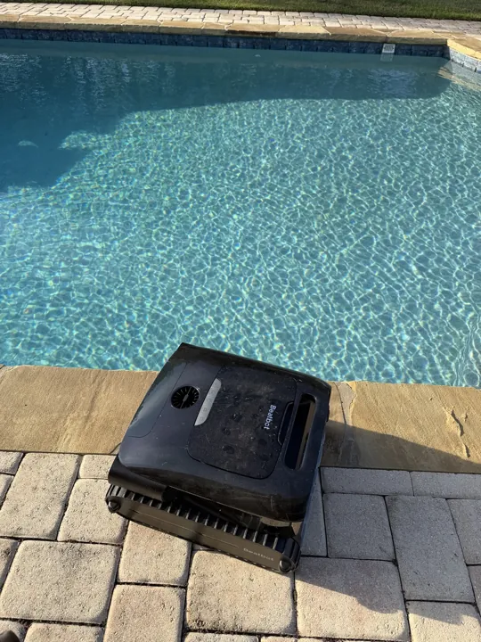

Shop Our Picks
Start with the gear already covered in our guides. Ownership and research labels explain the basis for each recommendation. Confirm the exact model, specifications and current retailer details before buying.
As an Amazon Associate, Saturday Gear Co. earns from qualifying purchases. Read our affiliate disclosure.
Garage
Milwaukee M18 Compact Brushless 2-Tool Combo Kit — 3692-22CT
Best for: frequent DIY projects and buyers planning to build an M18 cordless-tool collection. Milwaukee is our owner's personal preference, informed by real M18 use; this specific combo has not been personally tested.
Strengths: compact brushless drill and impact driver, with two CP2.0 batteries, a charger and a bag. The kit includes a 3601-20 drill/driver and 3650-20 impact driver.
Tradeoffs: a premium-platform buying path may cost more than an occasional user needs. This compact kit is not an M18 FUEL kit, and its drill/driver is not a hammer drill. Small batteries keep the tools manageable but are not a reason to assume long runtime with future saws or outdoor equipment.
Battery platform: M18 compatibility is a practical reason to stay with Milwaukee when you already own the batteries. Check the battery needs of each future tool; M12 is a separate battery system.
View Milwaukee 3692-22CT on AmazonAffiliate link. Confirm 3692-22CT, included batteries, seller, current price and warranty before ordering. The owner tool pictured in the supporting guide is the older 2656-20, not this kit's 3650-20.
Yard
DEWALT DXPW3300-S
A research-based current-model option for regular driveway and outdoor cleaning. Saturday Gear Co. Editor owns the older DXPW3123, not this linked DXPW3300-S; his ownership experience is described in our pressure-washer sizing guide. Compare rated operating PSI and GPM before buying.
View DEWALT DXPW3300-S on AmazonAffiliate link. Confirm the exact model, specifications and current price.
Yard
Westinghouse Universal 16.5-inch surface cleaner
Listed for up to 4400 PSI, designed for washers delivering at least 2 GPM, with a 1/4-inch quick connect. Confirm your washer’s rated flow, pressure and fittings; a larger commercial head can be a poor match for a roughly 2.4 GPM residential washer. We have not tested this attachment.
Check current options on AmazonAffiliate link. Check the exact model, current specifications and price before ordering.
Outdoor Cooking
Blackstone 2439 Original 36-inch Omnivore with Airfryer Combo
Saturday Gear Co. Editor has used the older Blackstone 36-inch Griddle Airfryer Combo, SKU 1868, for about three to four years and describes it as a workhorse for full meals. The linked 2439 is the closest current equivalent; he has not tested this exact revision.
View Blackstone 2439 on AmazonAffiliate link. As an Amazon Associate, Saturday Gear Co. earns from qualifying purchases at no extra cost to you. Full disclosure.
Weekend Gear
YETI Tundra 45
Saturday Gear Co. Editor owns a Tundra 45 that he won in a raffle. It is the firsthand reference for the hard-cooler format here. We are not claiming a timed ice-retention test. Before ordering, compare the current exterior dimensions, empty weight and usable interior with your vehicle and packed load.
Check current Tundra 45 options on AmazonAffiliate link. Confirm the exact model, current specifications and price before ordering.
Backup Power
Westinghouse WGen9500DF dual-fuel generator
A higher-output gasoline/propane option for a planned home-backup load. Westinghouse lists 9,500 running watts on gasoline and 8,500 on propane. Size the connected loads and starting surge, and arrange proper transfer equipment with a qualified electrician for home circuits. We do not own this generator.
Check current options on AmazonAffiliate link. Check the exact model, current specifications and price before ordering.
Pool equipment
Beatbot A200 Pro: our current cleaner
After several months of ownership, the A200 Pro has operated without an issue for us. Setup and app connection were seamless, and the cleaner has performed as expected in our pool.

Photo: Saturday Gear Co. Editor / Saturday Gear Co. Actual owner unit.
View Beatbot A200 Pro on Amazon →